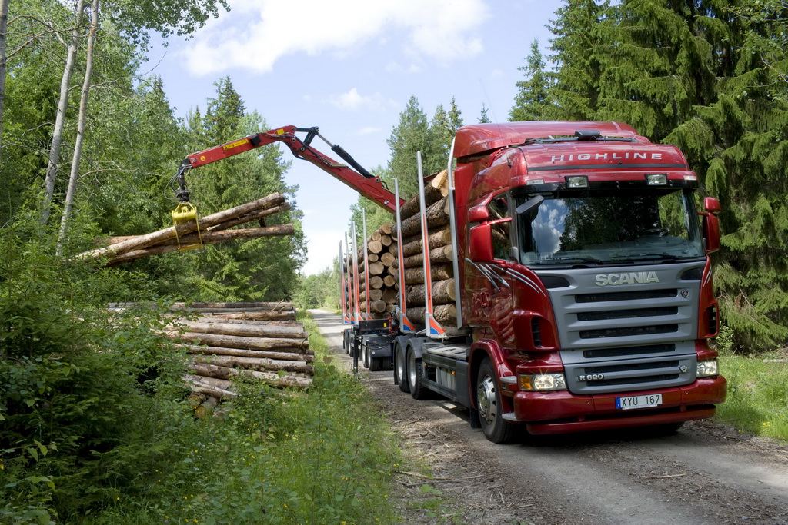

ООО «ЛесТрансСервис» предлагает сотрудничество по предоставлению в аренду лесовозной техники с экипажем. В наличии лесовозы MAN и SCANIA с прицепом и гидроманипулятором объёмом 40 м3. Работаем по всей Беларуси!

Лесовоз – это современная высокофункциональная специальная машина, которая считается самой универсальной техникой для перевозки бревен и прочих заготовок. Лесовозы не нуждаются в специальные погрузчиках леса и бревен, поскольку при небольших объемах лесозаготовок такие погрузчики не особенно эффективны. Лесовоз считается в хозяйствах самым распространенным видом спецтехники, их широко используют на лесозаготовках и оснащают манипуляторами, захватывающими бревна при выгрузке либо погрузке лесоматериалов. Аренда лесовоза всесторонне выгодна благодаря широкому спектру выполняемых работ.
Этот вид спецтехники наиболее функционален на погрузке и доставке длинномерных грузов, а использование лесовоза с прицепами разных моделей способствует увеличению объемов перевозимых грузов. Машины имеют постоянный полный привод и отличаются повышенной проходимостью по пересеченной местности.
Аренда лесовоза с гидроманипулятором – прекрасный выход при необходимости проведения работ в труднодоступных участках леса. Лесовозы легко справляются с самозагрузкой, поэтому аренда лесовоза также выгодна вдвойне, поскольку одна и та же машина способна успешно справиться с погрузкой различных грузов. Такой лесовоз хорошо подходит для широкого спектра погрузочно-разгрузочных работ.